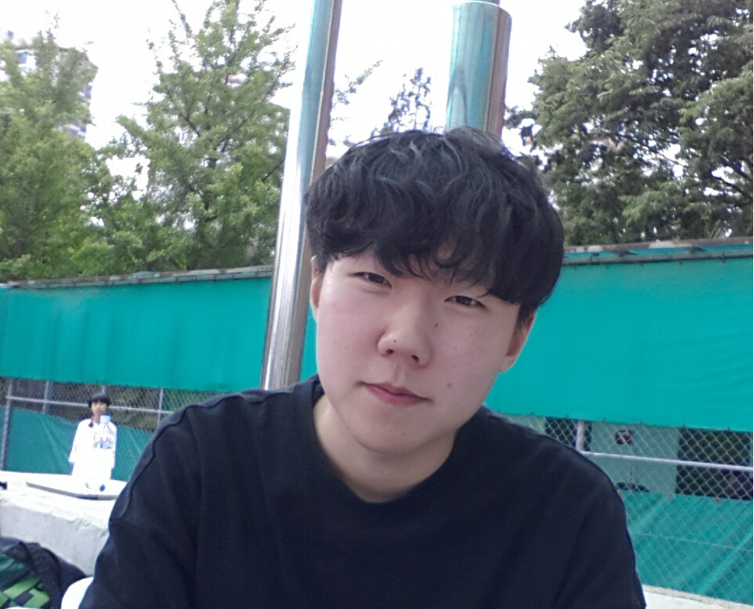
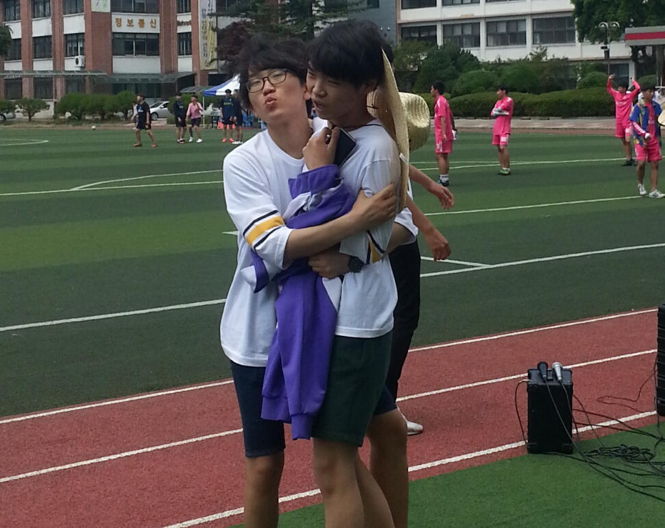
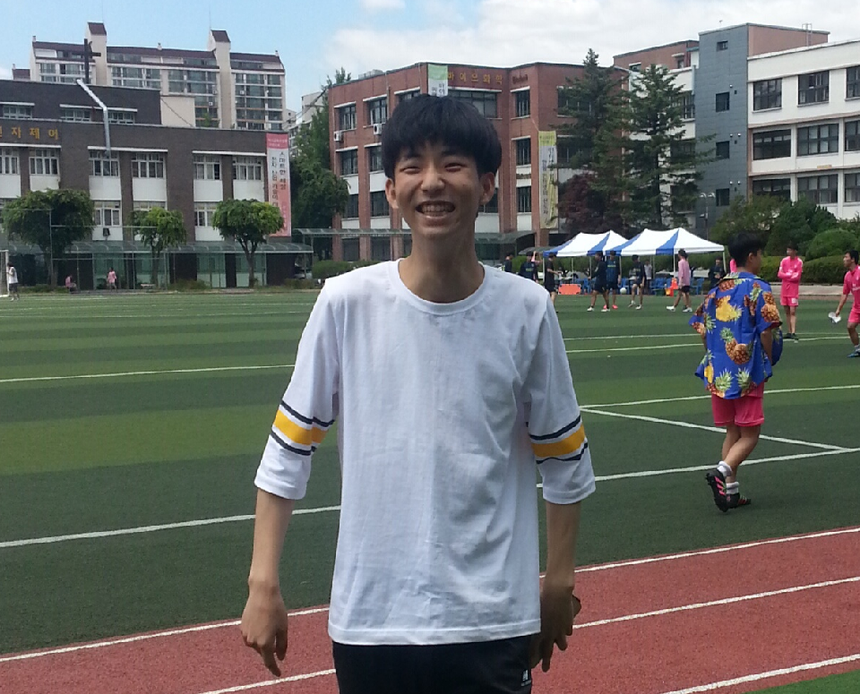
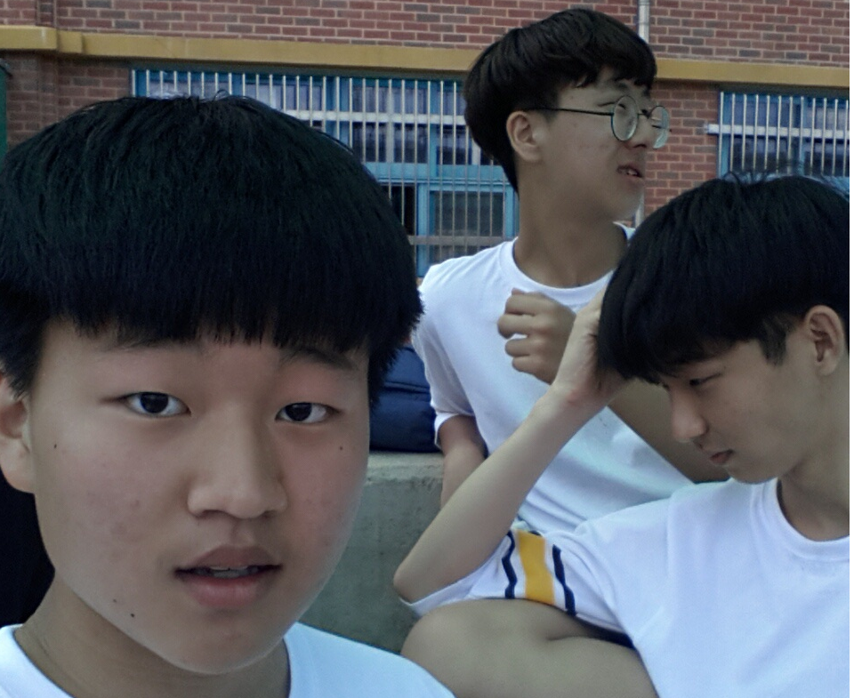

양디뉴스

양디고 김지민 볼수록 못생겨..
양디고 소프트웨어과 김지민씨가 알고보니 못생긴것으로 밝혀져 많은 논란이 일고 있다. 자신은 잘생겼다고 주장할것이다.

이형빈 알고보니 남자 좋아해?
기능경기대회 우승자 이형빈씨가 소프트웨어 2-2의 최영웅씨를 좋아하는 것 으로 밝혀졌다. 뽀뽀를 하려고 애를 쓰는 장면이 인상적이다.

나영채 뭐가 그리 기분좋은가?
나영채의 표정에서부터 행복함이 느껴진다. 여자친구와 헤어진것이 그리도 기쁜일인걸까?

박형진과 멍청이들
박형진과 멍청이들이 한데 모여있다. 종익이는 도제 때려치고 2반가서 재밌어보인다.